更新日 : 2013/02/03
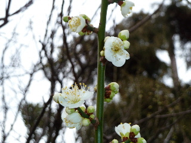
梅ってもう咲く時期でしたっけ？
梅の実が出来る普通の梅がもう咲いていました。一部ですけど、綺麗でした。
更新日 : 2014/02/09
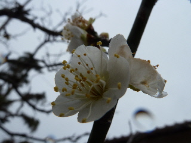
この梅はいつも寒い時期に咲きます。
去年よりちょっと遅いみたいです。去年は温かったですもんね。
更新日 : 2015/03/08
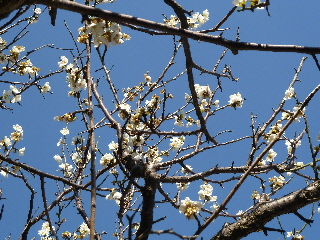
白い花の梅は満開です。
梅は咲いてる期間が長くていいですね。
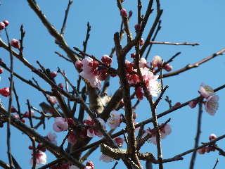
紅梅も咲きだしました。
近くに植わっていたら紅白ですね。
更新日 : 2017/02/05
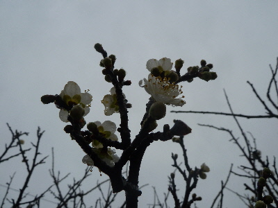
今日は天気が悪くどんよりしていました。
寒いですが、もう梅が咲いてるんですね。もうすぐ春ですね。
今年は梅の種を植えてみたいな。
更新日 : 2018/02/24
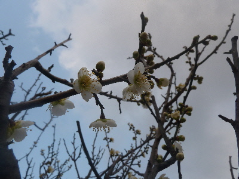
やっと梅が咲きました。（咲き始めです。）
去年より半月は遅い。暖かくなってから開花するのって、花見がしやすくていいですね。
更新日 : 2018/03/18
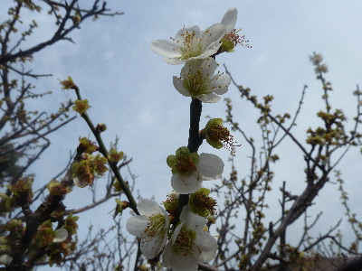
遅咲はまだ綺麗に咲いてますが、早くから咲いてる梅はもう終わりかけです。
1月くらい花が楽しめましたね。
梅の木を少し増やしてもいいかな。
更新日 : 2019/01/13
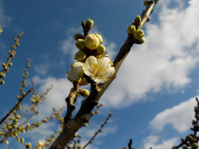
天気が良かったののんびり梅が見れました。寒いとのんびり見れないですよね。
これからドンドン咲きだすかんじです。
更新日 : 2022/02/12
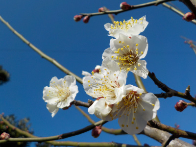
1週間前くらいからポツポツ咲きだして、ちょっと見栄えが良くなってきました。
今日は天気が良かったので、白が映えてキレイでした。
更新日 : 2023/02/19
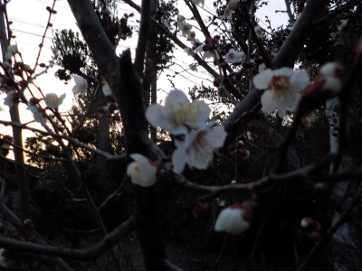
近所のあちこちで梅が咲いているのを見ていますが、自分の家の梅は見ていませんでした。
気付いた時はもう夜になってました。
暗いので写真がボケてます。明るいうちに見れば良かったです。
更新日 : 2023/02/26
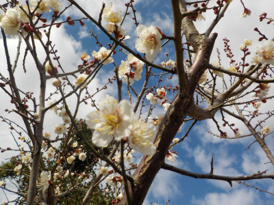
晴れた日に写真を撮ると、明るくキレイに写っていいですね。
写真撮ってて楽しかったです。
更新日 : 2024/01/28
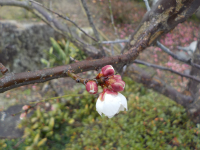
本当にちょっとだけ開花しました。
ご近所で沢山咲いてる木がありました。個体によって色々ですね。
梅の花見は寒いです。長くは鑑賞出来ません。
【おいしいものを食べよう。】【たくさん寝よう。】
【ソロ活をしよう!】【季節感のあることをしよう。】【動画視聴はほどほどに。】【当サイトの全てのコンテンツは無断転載禁止です。】